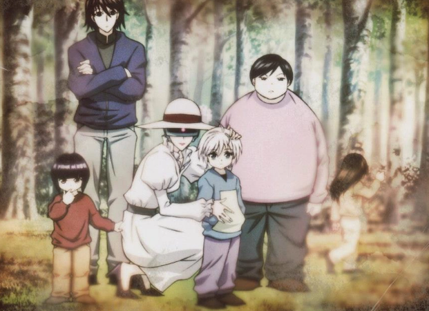
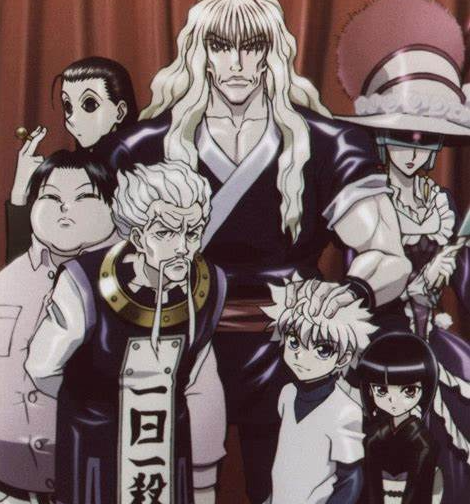
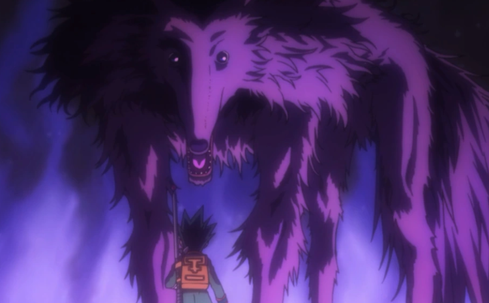
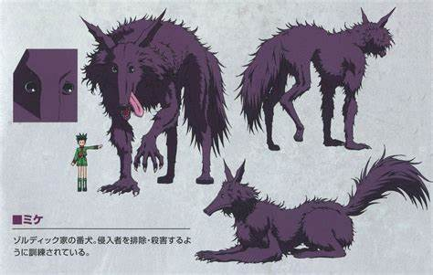
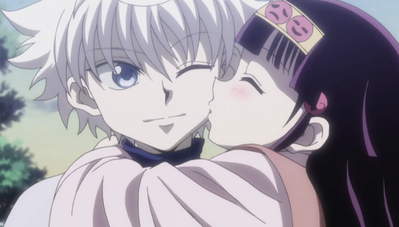
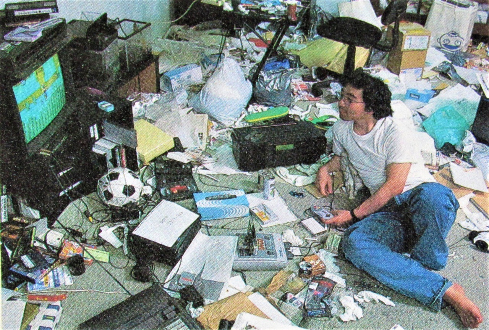
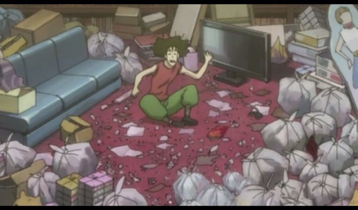

1 - Killua tem quatro irmãos: Illumi de 24 anos, Milluki de 19 anos, Alluka de 13 anos, Kalluto de 10 anos.


2 - Seu nome provavelmente é derivado de Kill que em inglês significa: Matar.
A outra metade de seu nome em portugês em alguns outros idiomas, significa: Lua - Satélite natural da Terra. Ele também é chamado de Kil pela família.
3 - O nome de todos os filhos Zoldyck é constituído da penúltima sílaba do irmão anterior, com mais a sílaba japonesa Ru (lu) e sua próxima sílaba nomeia o próximo filho:
Illumi - Milluki - Killua - Alluka - Kalluto
4 - Na versão antiga de 1999 ele possuía olhos verdes.
5 - Sua comida favorita são bolinhas de chocolare chamadas Choco Robo-kun.
6 - Adora tudo o que é doce, chegando a gastar 200 milhões de Jenis(moeda da série).
7 - Sua família tem um cachorro, que foi treinado como cão de guarda e apenas recebe ordens. Não tem nenhum sentimento ou afeto e age apenas como uma máquina de matança, seu nome é Mike.


8 - Alluka Zoldyck, é sua irmã transgênero. Killua é o único que a trata como uma garota. A família gerlemente a chama de "Coisa" por alguns acontecimentos da série. Especulções de alguns fãs, diz que o criador Yoshihiro Togashi, fez isso como uma forma de representar o preconceito e a discriminação que pessoas trans sofrem.

9 - Foto: autor de Hunter x Hunter, Yoshihiro Togashi em seu quarto. Ele criou uma cena insirada no cômodo e colocou na obra.


CURIOSIDADES